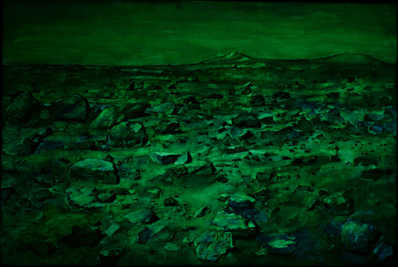
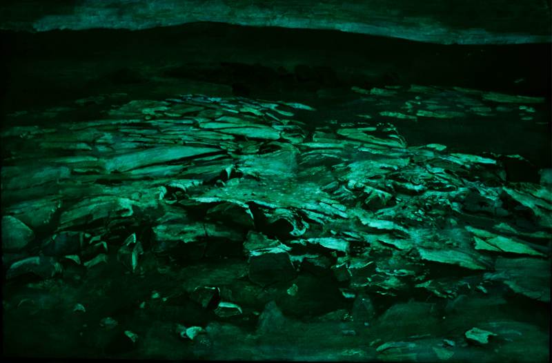
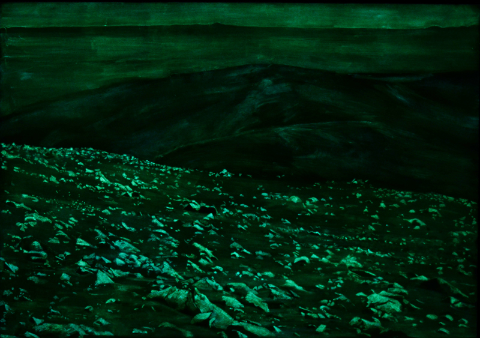
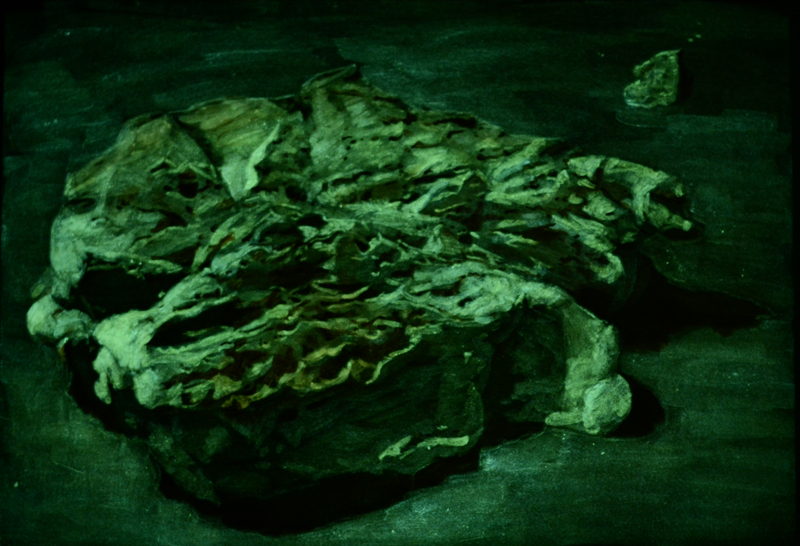
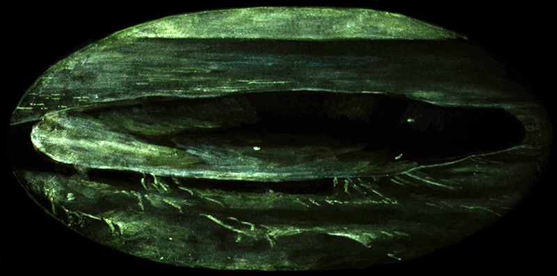
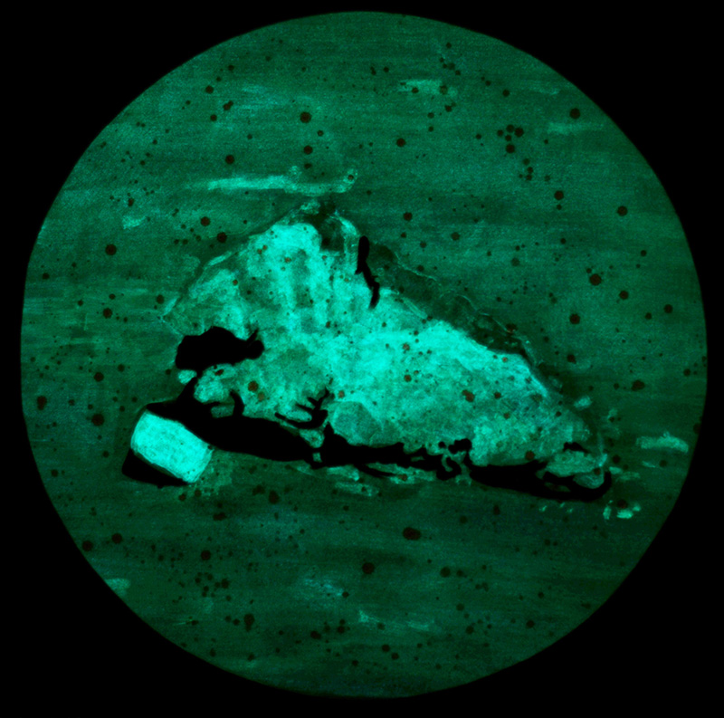

This series is about the human drive to prove oneself and explore. The paintings are inspired by the planned colonisation of Mars — a journey not into the unknown, but for the sake of experiencing and seeing more.
150×100 cm, acrylic and phosphorescent powder on linen (2014)

"Mars II"
150×100 cm, acrylic and phosphorescent powder on linen (2014)

"Mars III"
130×90 cm, acrylic and phosphorescent powder on linen (2014)

"Martian Rock"
Acrylic and phosphorescent powder on linen (2013)

"Martian Crater"
Acrylic and phosphorescent powder on linen (2013)

"Martian Rock"
Acrylic and phosphorescent powder on linen (2013)

This series is about the human drive to prove oneself and explore. The paintings are inspired by the planned colonisation of Mars — a journey not into the unknown, but for the sake of experiencing and seeing more.
The Martian landscapes are not immediately discernible in daylight, but once covered in darkness, a vast and mysterious extraterrestrial landscape is revealed. Light paints the picture here: flat, abstract surfaces are defined by reflected daylight, while dramatic, rocky vistas are shaped by the glowing light emitted from the painting.
The landscapes from Mars deceive the viewer's visual perception as rocks and mountains are made of light — appearing in the vacuum and conforming to some unearthly laws of space.